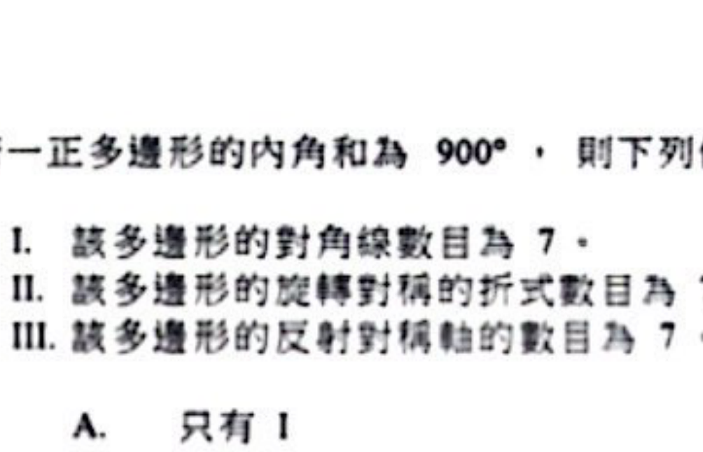
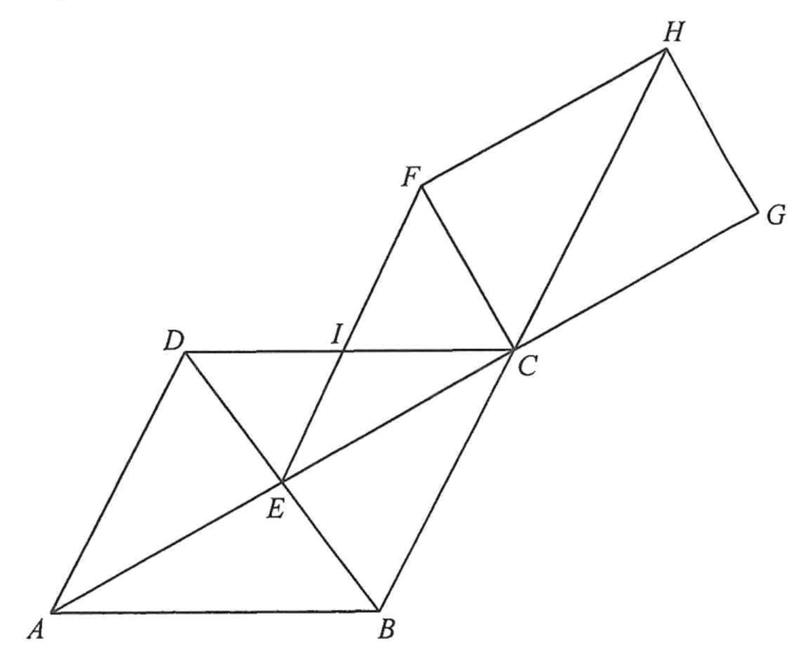

2024 DSE 數學 Paper 2 第 21 題 答案＋詳解
官方答案
B
題目（中文卷）
圖中，$ABCD$ 為一菱形。將 $AC$ 與 $BD$ 的交點記為 $E$。設 $F$ 為一點使得 $BH//EF$ 且 $CFHG$ 為一長方形，其中 $G$ 及 $H$ 分別為 $AC$ 的延線及 $BC$ 的延線上的點。將 $CD$ 與 $EF$ 的交點記為 $I$。下列何者必為正確？ I. $CI=FI$ II. $\angle ABE=\angle GCH$ III. $\Delta ADE \cong \Delta HCF$

- A. 只有 I 及 II
- B. 只有 I 及 III
- C. 只有 II 及 III
- D. I、II 及 III
English version（英文卷題目）
In the figure, $ABCD$ is a rhombus. Denote the point of intersection of $AC$ and $BD$ by $E$. Let $F$ be a point such that $BH \parallel EF$ and $CFHG$ is a rectangle, where $G$ and $H$ are points lying on $AC$ produced and $BC$ produced respectively. Denote the point of intersection of $CD$ and $EF$ by $I$. Which of the following must be true? I. $CI=FI$ II. $\angle ABE=\angle GCH$ III. $\triangle ADE \equiv \triangle HCF$

- A. I and II only
- B. I and III only
- C. II and III only
- D. I, II and III
考評報告
In Item 21, many candidates were not aware that $\angle ABE$ and $\angle GCH$ are complementary angles. Many candidates wrongly thought that $\angle ABE = \angle GCH$, and hence wrongly gave Option D as the answer